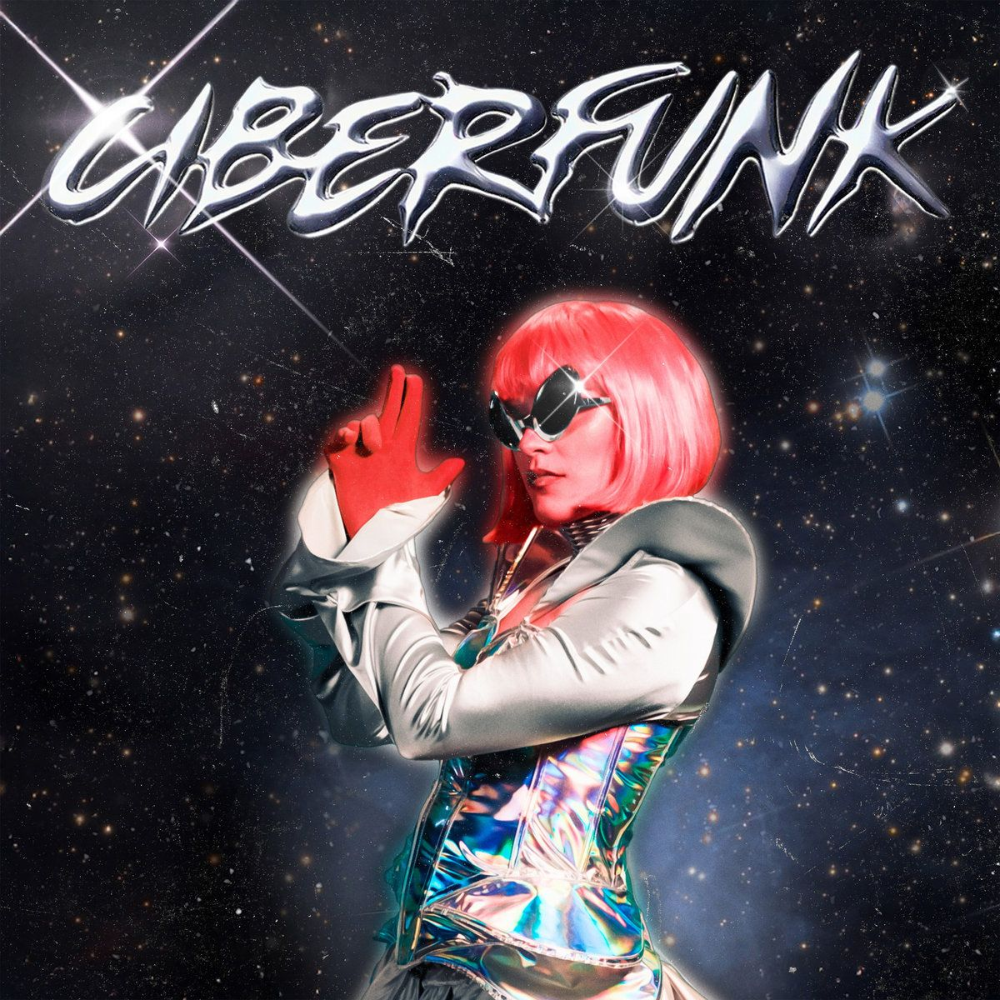

CIBERFUNK
Álbum de Stereo Madness. Se mueve entre el funk, la electrónica, el urbano y una estética futurista. Por su sonido y concepto, construye un universo muy digital y bailable, con energía de club, referencias cyber y una actitud bastante experimental.
Volver a la galería